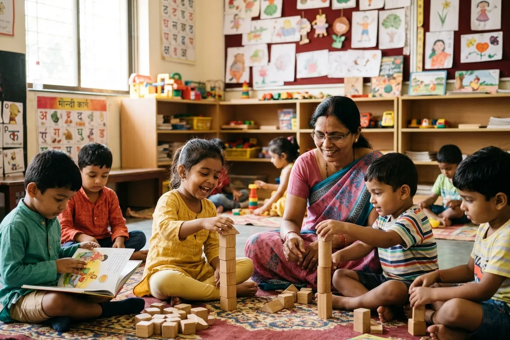
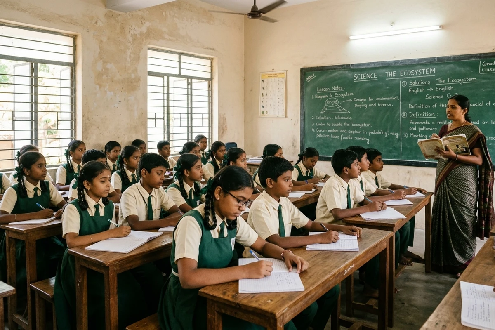
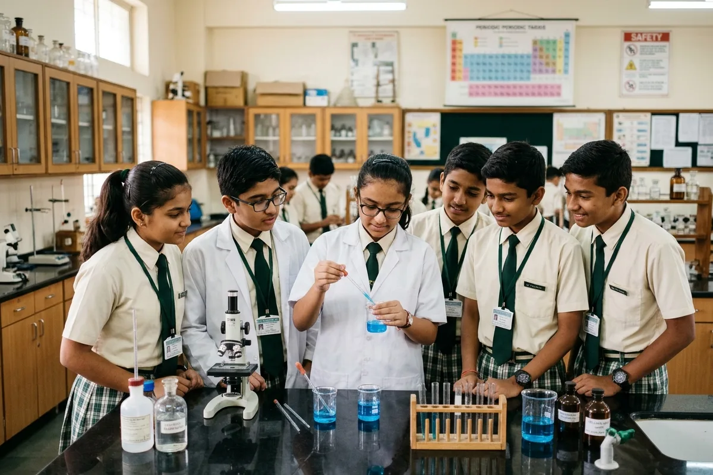

From early foundations to Maharashtra SSC Board excellence.
Dnyandeep English Medium School provides a sequential, concept-driven learning framework that nurtures intellect, discipline, and personal responsibility at each developmental phase.
Pre-Primary Section
Early childhood learning at Dnyandeep focuses on joyful curiosity, social interaction, cognitive development, and fine motor skills in a safe, caring, and encouraging atmosphere.
- Phonics, early language exposure, and basic numeracy through interactive play.
- Activity-based games, sensory play, storytelling, and creative motor development.
- Gentle teacher-student ratio fostering warmth, sharing, and self-confidence.

Joyful early-years classroom with tactile learning materials.
Primary Section
The primary years solidify core academic competencies. Students build structured study habits, conceptual clarity, and expressive communication in languages and sciences.
- Trilingual fluency in English, Marathi, and Hindi with grammar and reading comprehension.
- Fundamental mathematical operations, logical reasoning, and environmental awareness.
- Art, drawing, physical education periods, and inter-class cultural participation.

Primary classroom instruction combining chalkboard and active discussion.
Secondary SSC Section
Our secondary division emphasizes academic rigor, systematic syllabus coverage, practical laboratory demonstrations, and comprehensive preparation for the Maharashtra State Board examination.
- Subject-specialist faculty across Science, Mathematics, Social Sciences, and Languages.
- Practical laboratory sessions, science fairs, and analytical problem-solving exercises.
- Periodic mock tests, prelim examinations, doubt clarification, and personal academic mentoring.

Secondary students conducting chemistry experiment in school lab.
Teaching Methodology That Builds Lasting Foundations
At Dnyandeep, teaching is not merely about completing textbooks; it is about cultivating lifelong learners. We blend concept-based classroom explanations with continuous student assessment, individual attention, and disciplined revision schedules, ensuring every child steps forward with academic confidence and moral integrity.